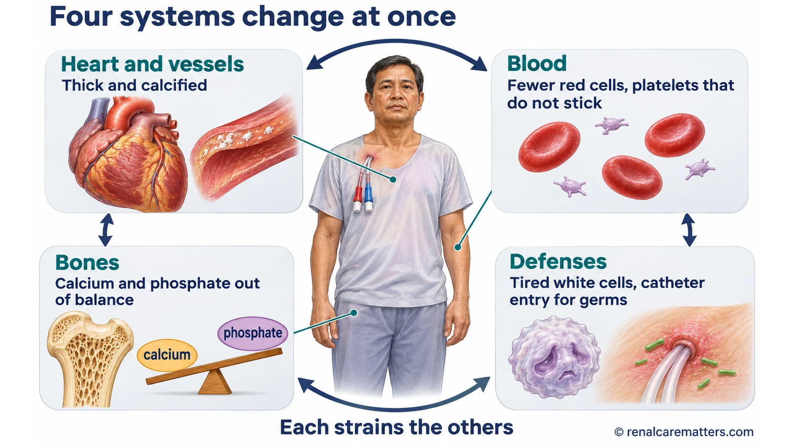
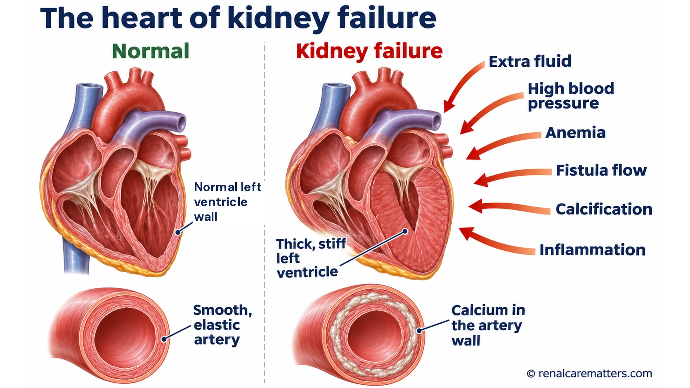
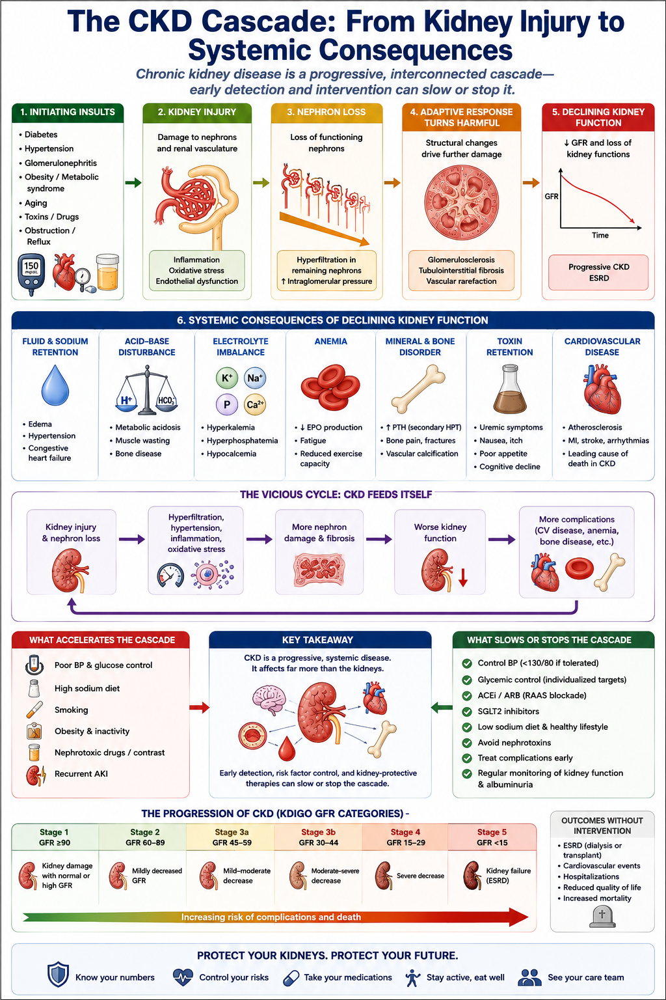
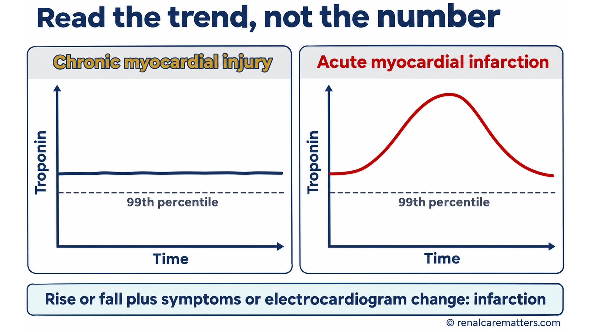
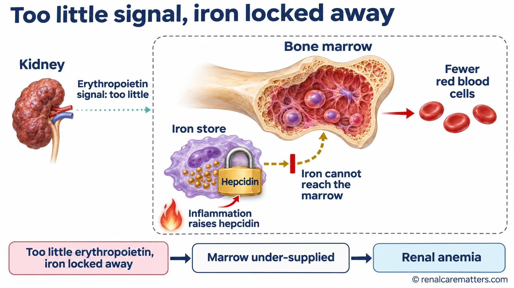
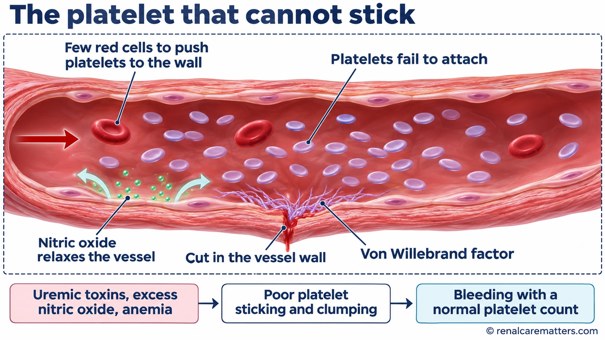
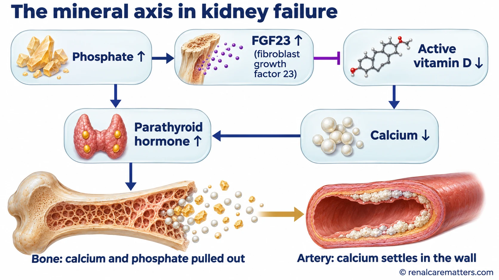
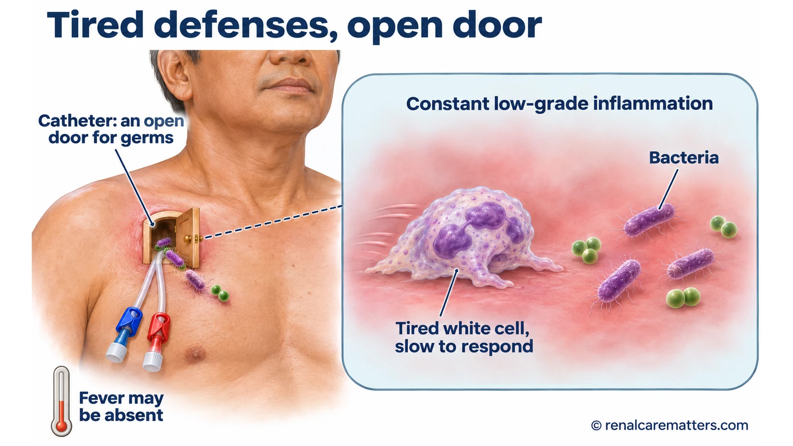
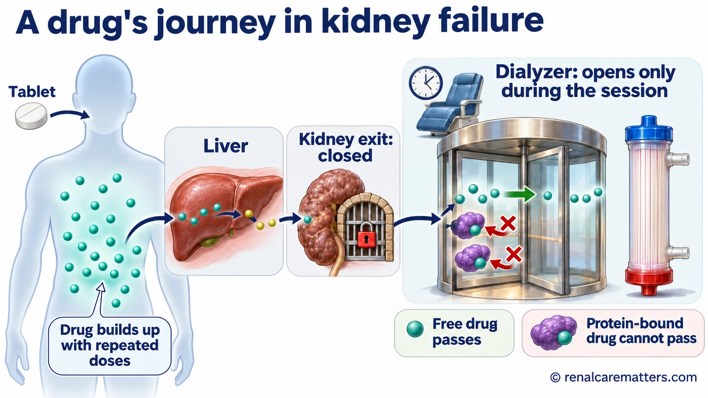

Life Without Kidney Function III: Heart, Blood, Bone, and Defenses
How kidney failure changes the heart and vessels, blood, bone, and immunity, and why common tests and medicines behave differently.
PublishedNailathalaGipatikPepalwal:ReferencesMga SanggunianMga TinubdanReng Reperensya:29Audience: Physicians who cover hemodialysis shifts · attending nephrologists, medical directors, and head nurses who orient themRead timeOras ng pagbasaOras sa pagbasaOras ning pamamasa:
This module is study material for physicians on duty in hemodialysis units. It explains the reasoning behind common decisions; it is not a protocol. At the chairside, follow your unit’s protocol and ask the attending nephrologist for guidance. Doses and cut-off values are set by your unit. Every case is fictional.
Learning objectives
After this module you should be able to
Describe how kidney failure changes the heart and blood vessels, and explain why heart disease and sudden death dominate mortality on dialysis.
Explain uremic bleeding, renal anemia, and the calcium, phosphate, and parathyroid axis in outline, and identify the findings that need the attending nephrologist.
Explain why immunity is weaker and infection presents atypically, and recognize the risk of sepsis in a dialysis patient.
Interpret troponin, natriuretic peptides, hemoglobin A1c, albumin-corrected calcium, and D-dimer with the cautions that kidney failure imposes.
Explain why drug handling changes in kidney failure, and name where to look before you prescribe.
Pre-testBefore you read, answer the 8 self-assessment questions and note your score. After the module, select New set of questions and compare. The difference is what you learned; the questions you still miss are what to reread.
Start here
The big picture, in plain words
In plain wordsPicture an old house where the plumbing, the wiring, and the roof all aged together. A leak in one place loosens a wire somewhere else. Kidney failure does the same to the body. The heart, the blood, the bones, and the defenses against infection wear out together, and each strains the others.
The picture has a limit. A house ages passively. In kidney failure, active processes drive the damage: retained salt, water, and phosphate, missing hormones, chronic inflammation, and the treatment itself. Several of them show up on the laboratory sheet you read every shift.

Figure 1. Kidney failure changes four systems at once: the heart and vessels, the blood, the bones, and the defenses against infection. Each strains the others.
Figure 2 · Key terms for this module
Left ventricular hypertrophy (LVH)Thickening of the wall of the main pumping chamber of the heart.
High-sensitivity cardiac troponinA test for very small amounts of a heart muscle protein. Troponin T (hs-cTnT) and troponin I (hs-cTnI) assays behave differently.
Natriuretic peptidesHormones released by stretched heart muscle: B-type natriuretic peptide (BNP) and its fragment, NT-proBNP.
ErythropoietinThe kidney hormone that tells the marrow to make red cells.
Uremic platelet dysfunctionPlatelets present in normal numbers that do not stick and clump normally.
CKD-mineral and bone disorder (CKD-MBD)Linked changes in calcium, phosphate, hormones, bone, and vessels in chronic kidney disease (CKD).
Ionized calciumThe free, active part of blood calcium, measured directly.
Most abnormal results on a dialysis patient’s sheet are old news. A few are new and dangerous, and some hide behind values that are “always high.” Your work is to know why each system is different, to read each test against the patient’s own baseline, and to report what is new to the attending nephrologist.
Opening case · fictional
Case: The troponin is always high
Mang Ponciano Macaraeg, 67, is a retired jeepney driver from Angeles City. He has diabetes and has been on hemodialysis for four years. He arrives for his Monday 6:00 a.m. session, after the long weekend gap.
At 6:20 a.m. he tells the nurse, Ms. Liza Manalo, that he has felt a “heaviness” in his upper abdomen since last night. He is sweating slightly. On the monitor, his blood pressure is 104/62 mm Hg; his usual pre-dialysis pressure is about 150/80. His pulse is 98 and regular, and his oxygen saturation is 95% on room air. He is 3.4 kilograms above his target weight.
Ms. Manalo has drawn the pre-dialysis blood, including the high-sensitivity troponin that the unit’s chest pain protocol asks for. She has not started the blood pump. His chart shows a troponin that has been “high” at every previous check. A senior staff member says, “It is always high. Start him.” All values in this case are illustrative, not targets.
Before reading on, decide:
Why might this patient’s troponin be elevated at baseline, and what would make today’s value meaningful?
Which findings today are more important than the troponin number?
Should dialysis start, and what do you report to the attending nephrologist?
Keep your answers in mind. The lesson gives you what you need, and the case review near the end shows one sound response.
Lesson · part 1
A thick, stiff heart and hard arteries
Picture an old, hardened garden hose on a pump. The pump pushes harder, and its walls thicken and stiffen. The picture has a limit. A pump needs no blood supply, and the heart does; thick muscle needs more oxygen, and its small vessels deliver less.
What normally happens and what breaks
A healthy aorta stretches with each beat, and its recoil feeds the coronary arteries while the heart relaxes. In CKD the arteries stiffen and calcify, so systolic pressure rises and coronary filling falls.
Kidney failure then adds several loads at once. Retained salt and water stretch the heart. Anemia and the flow through a fistula or graft raise the output it must deliver. Retained phosphate drives calcium into artery walls and valves. Inflammation and uremic toxins injure the vessel lining and the muscle. These act on top of diabetes, high blood pressure, smoking, and age.1
The result is a recognizable heart. The left ventricle thickens and relaxes poorly, so it needs a full chamber to pump well (diastolic dysfunction). Scar builds between the muscle fibers (fibrosis), and the valves calcify. Fibrosis and stretch disturb the electrical system, which sets the stage for arrhythmia and sudden death.1

Figure 3. The heart of kidney failure. Several loads act together and the left ventricle thickens and stiffens, while the arteries harden with calcium.
What kidney failure adds
What it does to the heart
What you may see in the chair
Salt and water between sessions
Stretches the chambers
High pre-dialysis pressure, breathlessness
Stiff, calcified arteries
Raises systolic load, lowers coronary filling
Wide pulse pressure. Ischemia when the pressure falls
Anemia and access flow
Raises the output the heart must deliver
Fast pulse, flow murmur
Thick, stiff ventricle
Needs a full chamber to fill
A sharp fall in pressure with fast fluid removal (Module 13)
Fibrosis and electrolyte swings
Unstable electrical system
Arrhythmia around the long gap (Module 15)
The evidence: how large the risk is
Go and colleagues followed 1,120,295 adults not on dialysis. Risk rose as the estimated glomerular filtration rate (eGFR) fell. Below 15 mL per minute per 1.73 m², the adjusted hazard ratio was 5.9 for death and 3.4 for cardiovascular events, compared with 60 or more.2 The study was observational, so illnesses that travel with kidney disease may explain part of the excess. Dialysis patients sit beyond its lowest group. About half of all deaths in kidney failure are attributed to cardiovascular disease.3

Figure 4. When nephrons are lost, several kidney jobs fail together. The heart, the blood, and the bones carry the consequences at the same time.
Why statins teach a lesson about this heart
Statins lower low-density lipoprotein (LDL) cholesterol and reduce events in the general population. Three randomized trials tested them in kidney failure.
Trial
Who was studied
Main outcome
4D (atorvastatin)
1,255 people with type 2 diabetes on hemodialysis
LDL fell 42%. Relative risk 0.92 (95% confidence interval 0.77 to 1.10), not significant4
AURORA (rosuvastatin)
2,776 people on hemodialysis
LDL fell 43%. 9.2 vs. 9.5 events per 100 patient-years, hazard ratio 0.96 (0.84 to 1.11), not significant5
SHARP (simvastatin plus ezetimibe)
9,270 people with CKD, 3,023 of them on dialysis
Major atherosclerotic events 11.3% vs. 13.4% over a median 4.9 years, rate ratio 0.83 (0.74 to 0.94)6
In SHARP, the absolute difference of 2.1 percentage points means treating about 48 people for five years to prevent one event, and the result is for a population mostly not on dialysis.6 The KDIGO (Kidney Disease: Improving Global Outcomes) lipid guideline suggests not starting a statin or statin and ezetimibe in adults on dialysis (2A), and suggests continuing them in adults already taking them when dialysis begins (2C).7
LDL cholesterol is a surrogate outcome. The drugs moved it by more than 40%, yet events did not fall in the hemodialysis trials. A likely explanation is that much of this heart disease is thick muscle, scar, stiff vessels, and unstable rhythm, which cholesterol lowering does not reach.
What you do on your shift
Expect ischemia to present as breathlessness, abdominal discomfort, sweating, or a falling pressure, and arrhythmia around the long gap (Module 15). Do not start or stop a cardiovascular drug at the chair; report.
RememberThis heart is thick, stiff, and easily stunned. Fast fluid shifts and sudden potassium shifts are its enemies.
Lesson · part 2
Troponin and natriuretic peptides: reading the trend, not the number
Picture a smoke detector in a house where someone always cooks. It reads a little smoke every day, so one reading tells you little. A reading that climbs over an hour tells you a fire has started. The picture has a limit. In kidney failure the everyday “smoke” is itself a warning: a chronically raised troponin marks a damaged heart and a higher risk of death.
Why troponin is raised at baseline
Injured heart muscle cells release troponin. In a dialysis patient, the thick ventricle, scarred muscle, diseased small vessels, and repeated stress of fluid removal cause a slow, steady leak. Reduced clearance may contribute for some assays, but the elevation mainly reflects underlying heart disease.8
The assay matters. In 103 stable, symptom-free hemodialysis patients, hs-cTnT was above the general-population 99th percentile in 99%, and a troponin I assay in 13%. The median hs-cTnT was unchanged over two weeks (69 vs. 69 ng/L) and fell slightly after a session (69 to 61 ng/L).9 With a high-sensitivity troponin I assay, 93% of 215 hemodialysis patients were below the 99th percentile, yet higher values still predicted death.10 Know which assay your laboratory uses.

Figure 5. A high but flat troponin is chronic injury. A rise or fall, with symptoms or electrocardiogram changes, is the pattern of acute infarction.
What the diagnosis of infarction requires
The Fourth Universal Definition of Myocardial Infarction requires a rise or fall of troponin, with at least one value above the 99th percentile, plus clinical evidence of ischemia, such as symptoms or new electrocardiogram (ECG) changes. A high but stable troponin is chronic myocardial injury.11 This is a consensus definition, not a graded recommendation, and it applies to dialysis patients too.
The evidence on serial testing
In two cohorts with suspected infarction (1,494 and 7,059 patients), the specificity of a single hs-cTnT with an eGFR below 60 fell to 0.26, compared with 0.73 without CKD. A second measurement at three hours restored performance.12 In 501 emergency patients with CKD, a baseline hs-cTnT of 52 ng/L or more had a positive predictive value for infarction of only 36%. A rise of more than 20 ng/L over two hours had a positive predictive value of 86%.13 These were CKD cohorts, not dialysis-only cohorts, and the thresholds belong to one assay.
Among 46,927 patients with suspected acute coronary syndrome, hs-cTnI was above the 99th percentile in 46% of those with kidney impairment. With a type 1 infarction, they were less often revascularized (26% vs. 53%). Among patients with a troponin above the 99th percentile, infarction or cardiovascular death at one year was twice as frequent with kidney impairment (24% vs. 12%).14 The analysis is observational and shows a gap, not its cause.
Natriuretic peptides
BNP and NT-proBNP are excreted by the kidney and almost always raised in kidney failure. They relate to heart structure and mortality, but cut-offs for heart failure or overload are inconsistent.15 A value well above the patient’s own usual level, with a picture that fits, is worth reporting.
Figure 6 · Reading a troponin in a dialysis patient
Start with the patientSymptoms, pressure against the usual value, pulse, and breathing.
Get an ECG nowCompare it with the last tracing. A new change outranks any troponin value.
Find the baselineThe last stable troponin, the assay, and its timing relative to dialysis.
Repeat per protocolAt the interval your unit’s chest pain protocol sets.
Read the changeA rise or fall with ischemia suggests acute infarction. A stable high value suggests chronic injury.
CallReport the picture, the ECG, and both values. Module 15 has the full pathway.
Worked scenario 1. Troponin change (illustrative values only). Last stable pre-dialysis hs-cTnT: 70 ng/L. Today at 0 hours: 88 ng/L. At 2 hours: 116 ng/L. Change from today’s first value = 116 − 88 = 28 ng/L over 2 hours. Change from baseline = 116 − 70 = 46 ng/L. What it tells you: the level is rising, the pattern the Universal Definition requires.11 In one CKD cohort, a 2-hour rise above 20 ng/L had a positive predictive value of 86%.13 What it does not tell you: it does not diagnose infarction without clinical evidence of ischemia, and the threshold was not derived in dialysis patients or for every assay. Your laboratory and protocol govern.
What you do on your shift
Never dismiss chest pain or an anginal equivalent because “the troponin is always high,” and never diagnose infarction from one value. Draw cardiac markers per protocol, before the session when possible, because dialysis lowers some values.
Stop and callStop and call the attending nephrologist at once for chest pain or an anginal equivalent (breathlessness, epigastric heaviness, sweating, unexplained low pressure) with a new ECG change, a rising troponin, or an unstable patient. Start your unit’s chest pain protocol while you call. Call also for a new murmur or a pericardial rub.
RememberRead a troponin as a trend against the patient’s own baseline, beside the ECG and the symptoms. One number never rules infarction in or out.
Lesson · part 3
Blood: anemia and the platelet that cannot stick
Picture a factory that has lost its foreman (the marrow without erythropoietin), and a road crew whose glue no longer sets (the platelets). The picture has a limit. The marrow is not broken and the platelets are not absent. Both work in a body whose signals and chemistry have changed.
Renal anemia
In health, the kidney senses falling oxygen delivery and releases erythropoietin, which tells the marrow to make red cells. Iron from stores builds their hemoglobin. In kidney failure, several links fail together. The kidney makes too little erythropoietin. Iron is lost in the circuit, at the needle sites, and in blood tests. Inflammation raises hepcidin, a liver hormone that locks iron in storage cells so it cannot reach the marrow. Red cells also survive a shorter time.

Figure 7. Renal anemia. The kidney sends too little erythropoietin, and inflammation raises hepcidin, which locks iron away from the marrow.
The KDIGO 2026 anemia guideline states that anemia should be evaluated with a complete blood count, reticulocytes, ferritin, and transferrin saturation (TSAT). It notes that alloimmunization after red cell transfusion may reduce future suitability for a kidney transplant.16 Module 21 covers treatment with iron and erythropoiesis-stimulating agents (ESAs).
Uremic bleeding
When a vessel is cut, platelets stick to the wall through a bridging protein, von Willebrand factor, then release their contents and clump. In uremia, retained toxins impair adhesion and aggregation, the interaction with von Willebrand factor is altered, and excess nitric oxide blunts platelet activation. Anemia adds to it: red cells normally push platelets toward the vessel wall, so fewer red cells means fewer platelets at the injury.17

Figure 8. Uremic platelet dysfunction. Platelets are present but adhere and clump poorly, and anemia keeps them away from the vessel wall.
The platelet count is usually normal. A review lists dialysis itself, erythropoietin, cryoprecipitate, desmopressin, and conjugated estrogens as options, with different onsets and durations, supported mostly by small trials.17 The choice and every dose belong to the attending nephrologist and the protocol.
Mechanism
What it causes
What you may see
Too little erythropoietin
Too few red cells made
Slowly falling hemoglobin, fatigue
Iron loss and the hepcidin lock
Red cells cannot be built
Low TSAT. Ferritin low with iron loss, normal or high with the hepcidin lock
Uremic platelet dysfunction
Weak plugs at cut vessels
Oozing needle sites, easy bruising
Heparin during the session
Added anticoagulation
Prolonged bleeding after needle removal (Module 19)
What you do on your shift
An unexplained drop in hemoglobin is a search for bleeding: needle sites, stools, vomit, menstrual loss, and the circuit records. Before transfusing a patient who may be considered for a transplant, ask the attending nephrologist first, unless bleeding threatens life; then follow the protocol.
Stop and callStop and call the attending nephrologist for an unexplained fall in hemoglobin, black stools or vomiting of blood, or bleeding that does not stop after the usual measures in your unit’s protocol.
RememberA falling hemoglobin means “find the blood loss” before it means “give more erythropoietin.”
Lesson · part 4
Bone and minerals: calcium, phosphate, and the parathyroid
Picture a seesaw with calcium on one end and phosphate on the other, and a supervisor who pushes down whenever it tilts. The supervisor is parathyroid hormone (PTH). In kidney failure the seesaw tilts more each year, and the supervisor works harder each year. The picture has a limit. The real system has at least five players, and bone and blood vessels are part of the board.
What normally happens and what breaks
Healthy kidneys excrete dietary phosphate and make calcitriol, the active vitamin D that helps the gut absorb calcium. As kidney function falls, phosphate is retained, and bone releases fibroblast growth factor 23 (FGF23) to push it out. FGF23 also suppresses calcitriol, so less calcium is absorbed. Low calcium, high phosphate, and low calcitriol all drive the parathyroid glands to grow and release more PTH, which pulls calcium and phosphate out of bone. Over years, bone weakens and calcium phosphate settles in arteries and valves.
KDIGO defines the whole picture as CKD-MBD: abnormal laboratory values, abnormal bone, and vascular or soft-tissue calcification together.18 The calcified arteries of the first section are partly a mineral problem. Module 21 teaches management.

Figure 9. The mineral axis in kidney failure. Retained phosphate raises FGF23 and parathyroid hormone, active vitamin D falls, and calcium and phosphate leave bone and settle in vessel walls.
The test-reading rule: corrected calcium
About half of blood calcium is bound, mostly to albumin. The other half is free, or ionized, and only this fraction is active.19 When albumin is low, total calcium falls while ionized calcium may be normal. Payne and colleagues derived a correction in 1973 from 200 specimens sent for liver tests: adjusted calcium = calcium − albumin + 4.0 (mg/dL and g/dL).20 Many references use a version with a factor of 0.8.
The formula was not derived in dialysis patients. In 50 stable hemodialysis patients, no correction formula improved agreement with measured ionized calcium beyond the uncorrected total, and the Payne formula did worse. Although 92% took calcium supplements, 22% had a low ionized calcium.21 pH matters too: acidosis raises the ionized fraction and alkalosis lowers it.
Worked scenario 3. Corrected calcium, and why not to trust it (illustrative values only). Payne formula: adjusted calcium = measured calcium − albumin + 4.0.20 Calcium 8.4 mg/dL, albumin 3.0 g/dL: 8.4 − 3.0 + 4.0 = 9.4 mg/dL. What it tells you: the formula moves a low-looking value into the normal range. What it does not tell you: on hemodialysis, correction did not bring the value closer to ionized calcium.21 When it matters (symptoms, a QT change, before any calcium is given), ask for an ionized calcium per protocol. The site’s corrected calcium calculator carries the same caution.
What you do on your shift
Read calcium with the albumin and the acid-base state in mind, and do not act on a corrected value alone. A high phosphate unchanged for months belongs to the monthly review. A new, very high or very low calcium is a call. So is calciphylaxis: calcification and clotting of small skin vessels that causes very painful, firm, dark skin patches, often on the thighs or abdomen. It is rare and often fatal, so early recognition matters.22
Stop and callStop and call the attending nephrologist for a very high or very low calcium, tingling or muscle spasm, a new QT prolongation, or a painful skin lesion that suggests calciphylaxis.
RememberTrust a measured ionized calcium over any corrected calcium. A formula is not a measurement.
Lesson · part 5
Defenses: weaker immunity and silent infection
Picture guards who are tired and jumpy: slow to meet a real intruder, yet always on edge. The picture has a limit. Guards change shifts; this immune system stays this way for years, and the gate, the skin over the access, opens three times a week.
What normally happens and what breaks
In health, neutrophils and monocytes kill bacteria, and lymphocytes make antibodies and remember infections. Fever and a rising white cell count are the visible signs. Uremia disturbs both arms. Kato and colleagues describe immunodepression, with weaker killing by white cells and poor lymphocyte responses that blunt vaccines. They also describe immunoactivation, a persistent low-grade inflammation that may feed vascular disease.3 Diabetes, malnutrition, age, catheters, and needles add to the risk.

Figure 10. Weaker defenses with constant low-grade inflammation. The access is the usual way in, and fever may be absent.
The evidence
About 20% of deaths in kidney failure are attributed to infection.3 Using United States registry data from the mid-1990s, Sarnak and Jaber found the annual death rate from sepsis about 100 to 300 times higher in dialysis patients than in the general population. The gap narrowed but persisted after stratifying by age, and sepsis mortality was still about 50 times higher when every cause listed on the death record was counted.23 The data are old and current Philippine figures are unknown, but the direction is not in doubt.
What uremia changes
Why it matters
What you may see
Weaker killing by white cells
Bacteria spread before the body responds
Infection advanced when first noticed
Blunted fever
The usual alarm is quiet
Low-grade, normal, or low temperature with sepsis
Poor antibody response
Vaccines protect less
Antibody levels that need checking (Module 29)
Skin breached every session
A direct route into the blood
Exit-site redness or pus. Rigors soon after connection
What you do on your shift
Fever may be absent. A low temperature, new confusion, or an unexplained fall in pressure can be the first sign of sepsis. Rigors soon after a catheter is connected suggest a catheter bloodstream infection. Look at the access first, then the chest, urine, feet, and any wound. Module 17 has the fever pathway.
Stop and callStop and call the attending nephrologist for fever or rigors in a patient with a catheter, unexplained low blood pressure, or a low temperature or new confusion with any sign of infection. Follow your unit’s fever protocol while you call.
RememberSepsis can arrive without fever. Look at the access first, and treat unexplained low pressure or new confusion as possible infection.
Lesson · part 6
Tests that read differently
Picture a map drawn for another country. The roads look familiar, but the distances are wrong. Most reference ranges were drawn from people with working kidneys. The picture has a limit. A wrong map is useless; a test in a dialysis patient is still useful once you know which way it is distorted.
Two rules apply to almost every test. Note when the sample was drawn: before or after dialysis, after the long or short gap. Compare it with the patient’s own recent values.
Test
How kidney failure distorts it
How to read it
Creatinine and eGFR
eGFR equations assume steady state and working kidneys. On dialysis, creatinine reflects muscle mass and session timing
Do not use an eGFR on dialysis. A falling creatinine over months may mean lost muscle (Module 23)
Hemoglobin A1c (HbA1c)
Shorter red cell survival and ESAs lower it for the same glucose24
Compare with glucose readings. KDIGO notes low reliability on dialysis25
High-sensitivity troponin
Raised at baseline with some assays; slightly lower after a session9
Stays sensitive, but nearly everyone with an eGFR below 60 has a raised value. Few study patients had severe kidney failure26
A normal value still argues against a clot, though dialysis patients were not studied separately. A raised one means little
Potassium
Highest before the first session of the week; falls during the session
Always note the timing (Modules 2 and 18)
Blood urea nitrogen (BUN)
Falls with dialysis and with poor protein intake
A low pre-dialysis BUN can mean poor eating (Module 7)
Hemoglobin A1c: the evidence
In 307 people with diabetes, 258 on hemodialysis, HbA1c tended to be lower on dialysis despite higher glucose, and it was lower in patients on higher erythropoietin doses. Glycated albumin reflected glycemia better.24 The study was cross-sectional and did not test outcomes.
The KDIGO 2022 diabetes guideline still recommends HbA1c to monitor glycemic control in diabetes and CKD (1C). Its ungraded Practice Point 2.1.2 adds that HbA1c accuracy declines in CKD G4 to G5, particularly on dialysis, where reliability is low. Practice Point 2.1.3 offers a glucose management indicator from continuous glucose monitoring when HbA1c and measured glucose disagree.25 HbA1c remains the standard test, read with its bias in mind.
Worked scenario 2. HbA1c and estimated average glucose (illustrative values only). A1c-Derived Average Glucose (ADAG) formula: estimated average glucose (mg/dL) = 28.7 × HbA1c (%) − 46.7.27 HbA1c 6.2%: 28.7 × 6.2 − 46.7 = 177.9 − 46.7 = 131 mg/dL. The home glucose log averages about 190 mg/dL. What it tells you: HbA1c suggests far better control than the log, the direction of error expected on hemodialysis.24 What it does not tell you: the formula came from 507 people with and without diabetes, not from dialysis patients, so it cannot be corrected for this patient. Report the mismatch; do not change glucose treatment at the chair (Module 22). The site’s HbA1c calculator shows the same conversion.
Worked scenario 4: a monthly sheet with the nurse
Ms. Manalo hands you the monthly results of a patient who is well today. You sort them.
Result (illustrative)
Group
Action
Phosphate high, unchanged for three months
Expected for this patient
Document as stable
Troponin “high” from last week’s chest pain check, at the usual level, no symptoms
Expected for this patient
Record the assay and value as a baseline
Hemoglobin 9.1 g/dL, last month 10.4 g/dL
New; report today
Look for bleeding. Tell the attending nephrologist
Albumin 3.3 g/dL
Note it
Read the calcium with it in mind
Potassium 5.9 mmol/L before the session
Act per protocol now
Follow the potassium protocol and call if it directs (Module 18)
Arithmetic for the sheet (illustrative). Change in hemoglobin = 10.4 − 9.1 = 1.3 g/dL in one month, more than a tenth of the previous value. What it tells you: with no known change in treatment, this is new and is reported today. What it does not tell you: the cause. Bleeding comes first; a missed erythropoiesis-stimulating agent (ESA) dose, iron deficiency, infection, and hemolysis follow.
RememberRead every result against this patient’s own baseline and against the clock of the dialysis week.
Lesson · part 7
Drugs: what the missing kidney and the dialyzer change
Picture a building with several exits. In kidney failure, one of the widest, the kidney, is closed. A revolving door appears, the dialyzer, but it turns only during the session and lets through only small, free molecules. The picture has a limit. Closing the kidney exit also slows some of the other exits.
What normally happens and what breaks
When the kidney route closes, a drug that depends on it accumulates with repeated doses, and so do active or toxic products of some liver-handled drugs. A KDIGO conference report adds that kidney disease also reduces non-renal clearance, through liver enzymes and drug transporters.28 Uremia and low albumin change protein binding, so the free, active fraction can rise while the total level looks normal.

Figure 11. A drug’s journey in kidney failure. The kidney exit is closed, the dialyzer opens only during sessions, and protein-bound drug cannot pass through it.
A drug crosses the dialyzer membrane only when it is free in the plasma and small enough for the membrane’s pores. A drug spread widely in the tissues has little in the blood to remove. High-flux membranes and longer sessions remove more.28
Drug property
Removal by dialysis
Practical question
Small, free in plasma
Removed more readily
Should the dose follow the session?
Highly protein bound
Little removed
Is the free level higher than the total suggests?
Large volume of distribution
Little removed
Will toxicity persist after dialysis?
Cleared mainly by the kidney
Accumulates between sessions
Does the dose or interval need to change?
What the guidelines say
The KDIGO 2024 CKD guideline gives ungraded practice points. People with CKD may be more susceptible to nephrotoxic medicines, so weigh benefit against harm (4.1.1). Review and limit over-the-counter medicines and herbal remedies that may be harmful (4.1.3). Consider glomerular filtration rate (GFR) when dosing drugs cleared by the kidneys (4.2.1). Tell patients the benefits and risks of their medicines so they can report adverse events, and work with pharmacists and tools that support safe prescribing (4.3.1.1 and 4.3.1.2).29
Figure 12 · Before you prescribe at the chair
Check the referenceUse a renal dosing reference and the unit’s formulary, with the dialysis entry, not an eGFR band. The site’s renal medication safety tool is a starting point.
Ask about timingAsk whether the dose should follow the session.
Count what is already thereOver-the-counter painkillers, herbal remedies, and medicines from other doctors add to the load.
Ask the nephrologistChronic medicines belong to the attending nephrologist. Module 20 teaches prescribing.
RememberEvery new drug gets three questions: is it cleared by the kidney, is it removed by the dialyzer, and when should it be given relative to the session.
On the floor
Real situations: problems and solutions
These are fictional but typical. For each one, cover the answer, decide what you would do, then compare. Where a step depends on local rules, your unit’s procedure and your supervisor’s direction come first.
The breathless grandmother with a normal troponin
What you see
Lola Remedios, 78, with diabetes, says she is more tired than usual and breathless when she walks from the jeepney. She has no chest pain. Her troponin is at her usual level, and her pressure is lower than usual.
What is likely going on
A single troponin at baseline does not exclude acute ischemia, especially early. Older women with diabetes often present without chest pain.
What to do
Get an electrocardiogram now and compare it with her last one. Repeat the troponin at the interval your unit’s chest pain protocol sets. Call the attending nephrologist before fluid removal starts.
Why it matters
An atypical presentation and a reassuring first number are the combination most likely to delay the diagnosis.
The hemoglobin that dropped
What you see
The monthly sheet shows Mr. Danilo Reyes’s hemoglobin has fallen from 10.6 to 8.9 g/dL. He feels well. He mentions dark stools last week and takes a painkiller he buys at the sari-sari store.
What is likely going on
Gastrointestinal bleeding is likely. Over-the-counter anti-inflammatory painkillers raise the risk, and uremic platelets make bleeding harder to stop.
What to do
Ask about the painkiller by name, check his pulse and pressure lying and sitting, and look at the needle sites. Call the attending nephrologist today and ask how to handle heparin for this session.
Why it matters
The fall is the clue. Treating it as “his anemia” would miss the bleeding, and heparin during the session would make it worse.
The calm patient with a low temperature
What you see
Mrs. Teresita Gomez, who dialyzes through a tunneled catheter, is unusually quiet. Her temperature is 35.9 °C and her pressure is 92/58 mm Hg, lower than usual. The catheter dressing is damp.
What is likely going on
Sepsis from the catheter is possible. Uremia blunts fever, and a low temperature can be a sign of severe infection.
What to do
Look at the exit site and tunnel. Follow your unit’s fever and sepsis protocol, including blood cultures as it directs, and call the attending nephrologist now.
Why it matters
Waiting for a fever that may never come loses hours in a patient whose sepsis risk is many times that of the general population.
The corrected calcium that looked fine
What you see
Mr. Arnel Cruz complains of tingling around his mouth and cramps in his hands. His total calcium is low, but the “corrected” calcium on the report is normal because his albumin is low.
What is likely going on
His ionized calcium may be low. Correction formulas do not track ionized calcium well in dialysis patients.
What to do
Request an ionized calcium per protocol, look at the QT interval on an electrocardiogram, and call the attending nephrologist. Do not give calcium on your own judgment.
Why it matters
Trusting the corrected value would dismiss real symptoms. The symptoms and the ECG outrank the formula.
The new antibiotic at the end of the session
What you see
A nurse asks you to prescribe an antibiotic for a foot ulcer in Mr. Rodolfo Santos, who has diabetes. The family asks whether he can take it right away, before the session ends.
What is likely going on
Many antibiotics are cleared by the kidney and some are removed by the dialyzer. The dose and the timing depend on both.
What to do
Check a renal dosing reference using the dialysis entry and ask whether the dose should follow the session. Look at the foot properly. Inform the attending nephrologist, who owns the medicine plan.
Why it matters
A dose given at the wrong time can be partly removed by the dialyzer, and a usual dose can accumulate to toxic levels.
Field notes
Keep a note of each patient’s last stable troponin, with the assay and the date. It turns a confusing value into a useful one.
Write “pre” or “post” and “long gap” or “short gap” beside every value you copy into a note.
When a patient says “I feel different today,” take it seriously. Heart disease and infection are often atypical in the chair.
Ask every patient about painkillers and herbal remedies bought without a prescription. They rarely mention them unless asked.
Read the laboratory sheet with the nurse, not alone. The nurse often knows the patient’s usual values and recent events.
Case review
Back to the case: The troponin is always high
Why might his troponin be high at baseline, and what would make today’s value meaningful? Four years of dialysis and diabetes have almost certainly left Mang Ponciano with a thick, scarred ventricle and diseased small vessels, which leak troponin steadily. With an hs-cTnT assay, nearly every stable hemodialysis patient is above the 99th percentile.9 Today’s value becomes meaningful when it is compared with his last stable value, same assay and same point in the dialysis week, and when a repeat shows whether it is rising. A rise with ischemia meets the definition of acute infarction.11
Which findings matter more? Epigastric heaviness with sweating in a man with diabetes is an anginal equivalent until proven otherwise. His pressure is more than 40 mm Hg below his usual value while he carries 3.4 kilograms of extra fluid: a low pressure in an overloaded patient points to a failing pump, and bleeding and sepsis must also be considered. A pulse of 98 fits any of these. The ECG, compared with his last tracing, comes before any troponin result.
Should dialysis start? Not on “it is always high.” Fluid removal could lower his pressure further and deepen the ischemia. You ask for an ECG now, follow the chest pain protocol, and call the attending nephrologist before the blood pump starts. Using the situation, background, assessment, recommendation (SBAR) format from Module 1, you report the symptom and its onset, his pressure against his usual value, pulse, saturation, weight gain, the ECG, his baseline and today’s troponin with the assay, and when the repeat is due. His ECG shows new ST depression in the lateral leads, and the nephrologist arranges transfer to the emergency department (Module 15).
Skills lab · with your preceptor
Skills checklist: Reading a routine laboratory sheet with the nurse
Read a real or simulated monthly laboratory sheet with a dialysis nurse while your preceptor observes. Talk through each step aloud. Your preceptor rates each step as satisfactory, needs practice, or not observed. Steps marked Critical must all be satisfactory before sign-off. This checklist supports supervised learning; your unit’s own procedure and competency form are the authority. A printable version of every checklist is on the trainer page.
CriticalConfirms the patient’s identity and the date and time of each sample.
CriticalNotes whether each sample was drawn before or after dialysis, and after the long or the short gap.
Compares each value with the patient’s own last three values, not only with the laboratory range.
CriticalIdentifies results that need action now under the unit’s protocol, such as potassium, and acts or calls.
Identifies new changes to report today, such as a fall in hemoglobin or a new high calcium.
Identifies expected chronic abnormalities and documents them as stable.
For troponin or a natriuretic peptide, records the assay and the patient’s baseline if known.
For HbA1c, states the caution on dialysis and compares it with glucose readings.
For calcium, reads it with the albumin and the acid-base state, and requests an ionized calcium per protocol when it matters.
States which drugs on the patient’s list are cleared by the kidney, without changing any of them.
CriticalWrites a brief summary in the record and tells the attending nephrologist what is new.
Placement activity. For two weeks, read the monthly laboratory sheets of five patients with the charge nurse. For each, write one line on what is expected for that patient, what is new, and what needed action. Review the lines with your preceptor and the attending nephrologist.
Self-assessment
Check your understanding
Each visit draws 8 questions at random from this module’s 15-question bank. Choose the single best answer for each, then select Check answers; an explanation appears under the best answer. Select New set of questions for a different mix. A good target is 7 of 8 on two different sets. Nothing you select is sent anywhere; scoring happens in your browser.
Jankowski, J., Floege, J., Fliser, D., Böhm, M., & Marx, N. (2021). Cardiovascular disease in chronic kidney disease: Pathophysiological insights and therapeutic options. Circulation, 143(11), 1157–1172. https://doi.org/10.1161/CIRCULATIONAHA.120.050686
Go, A. S., Chertow, G. M., Fan, D., McCulloch, C. E., & Hsu, C. Y. (2004). Chronic kidney disease and the risks of death, cardiovascular events, and hospitalization. New England Journal of Medicine, 351(13), 1296–1305. https://doi.org/10.1056/NEJMoa041031
Kato, S., Chmielewski, M., Honda, H., Pecoits-Filho, R., Matsuo, S., Yuzawa, Y., Tranaeus, A., Stenvinkel, P., & Lindholm, B. (2008). Aspects of immune dysfunction in end-stage renal disease. Clinical Journal of the American Society of Nephrology, 3(5), 1526–1533. https://doi.org/10.2215/CJN.00950208
Wanner, C., Krane, V., März, W., Olschewski, M., Mann, J. F., Ruf, G., Ritz, E., & German Diabetes and Dialysis Study Investigators. (2005). Atorvastatin in patients with type 2 diabetes mellitus undergoing hemodialysis. New England Journal of Medicine, 353(3), 238–248. https://doi.org/10.1056/NEJMoa043545
Fellström, B. C., Jardine, A. G., Schmieder, R. E., Holdaas, H., Bannister, K., Beutler, J., Chae, D. W., Chevaile, A., Cobbe, S. M., Grönhagen-Riska, C., De Lima, J. J., Lins, R., Mayer, G., McMahon, A. W., Parving, H. H., Remuzzi, G., Samuelsson, O., Sonkodi, S., Sci, D., . . . AURORA Study Group. (2009). Rosuvastatin and cardiovascular events in patients undergoing hemodialysis. New England Journal of Medicine, 360(14), 1395–1407. https://doi.org/10.1056/NEJMoa0810177
Baigent, C., Landray, M. J., Reith, C., Emberson, J., Wheeler, D. C., Tomson, C., Wanner, C., Krane, V., Cass, A., Craig, J., Neal, B., Jiang, L., Hooi, L. S., Levin, A., Agodoa, L., Gaziano, M., Kasiske, B., Walker, R., Massy, Z. A., . . . SHARP Investigators. (2011). The effects of lowering LDL cholesterol with simvastatin plus ezetimibe in patients with chronic kidney disease (Study of Heart and Renal Protection): A randomised placebo-controlled trial. The Lancet, 377(9784), 2181–2192. https://doi.org/10.1016/S0140-6736(11)60739-3
Wanner, C., Tonelli, M., & Kidney Disease: Improving Global Outcomes Lipid Guideline Development Work Group Members. (2014). KDIGO clinical practice guideline for lipid management in CKD: Summary of recommendation statements and clinical approach to the patient. Kidney International, 85(6), 1303–1309. https://doi.org/10.1038/ki.2014.31
deFilippi, C. R., & Herzog, C. A. (2017). Interpreting cardiac biomarkers in the setting of chronic kidney disease. Clinical Chemistry, 63(1), 59–65. https://doi.org/10.1373/clinchem.2016.254748
Pianta, T. J., Horvath, A. R., Ellis, V. M., Leonetti, R., Moffat, C., Josland, E. A., & Brown, M. A. (2012). Cardiac high-sensitivity troponin T measurement: A layer of complexity in managing haemodialysis patients. Nephrology, 17(7), 636–641. https://doi.org/10.1111/j.1440-1797.2012.01625.x
Artunc, F., Haag, S., Friedrich, B., Mueller, C., Häring, H. U., & Peter, A. (2019). Performance of a novel high sensitivity cardiac troponin I assay in asymptomatic hemodialysis patients: Evidence for sex-specific differences. Clinical Chemistry and Laboratory Medicine, 57(8), 1261–1270. https://doi.org/10.1515/cclm-2018-1176
Thygesen, K., Alpert, J. S., Jaffe, A. S., Chaitman, B. R., Bax, J. J., Morrow, D. A., & White, H. D. (2018). Fourth universal definition of myocardial infarction (2018). Circulation, 138(20), e618–e651. https://doi.org/10.1161/CIR.0000000000000617
Kraus, D., von Jeinsen, B., Tzikas, S., Palapies, L., Zeller, T., Bickel, C., Fette, G., Lackner, K. J., Drechsler, C., Neumann, J. T., Baldus, S., Blankenberg, S., Münzel, T., Wanner, C., Zeiher, A. M., & Keller, T. (2018). Cardiac troponins for the diagnosis of acute myocardial infarction in chronic kidney disease. Journal of the American Heart Association, 7(19), Article e008032. https://doi.org/10.1161/JAHA.117.008032
Knott, J. D., Ola, O., De Michieli, L., Akula, A., Mehta, R. A., Dworak, M., Crockford, E., Lobo, R., Slusser, J., Rastas, N., Karturi, S., Wohlrab, S., Hodge, D. O., Grube, E., Tak, T., Cagin, C., Gulati, R., Sandoval, Y., & Jaffe, A. S. (2024). Diagnosis of acute myocardial infarction in patients with renal failure using high-sensitivity cardiac troponin T. European Heart Journal: Acute Cardiovascular Care, 13(7), 546–558. https://doi.org/10.1093/ehjacc/zuae079
Gallacher, P. J., Miller-Hodges, E., Shah, A. S. V., Farrah, T. E., Halbesma, N., Blackmur, J. P., Chapman, A. R., Adamson, P. D., Anand, A., Strachan, F. E., Ferry, A. V., Lee, K. K., Berry, C., Findlay, I., Cruickshank, A., Reid, A., Gray, A., Collinson, P. O., Apple, F. S., . . . High-STEACS Investigators. (2022). High-sensitivity cardiac troponin and the diagnosis of myocardial infarction in patients with kidney impairment. Kidney International, 102(1), 149–159. https://doi.org/10.1016/j.kint.2022.02.019
Yang, W. L., Fahim, M., & Johnson, D. W. (2020). Pathophysiology and significance of natriuretic peptides in patients with end-stage kidney disease. Clinical Biochemistry, 83, 1–11. https://doi.org/10.1016/j.clinbiochem.2020.05.013
Babitt, J. L., Berns, J. S., Bozkurt, B., Cheung Khedairy, R. S., Cuevas, Y., Effa, E. E., Eisenga, M. F., Fishbane, S., Ginzburg, Y. Z., Haase, V. H., Hedayati, S. S., Kim, S., Moura-Neto, J. A., Nagler, E. V., Rossignol, P., Sahay, M., Tanaka, T., Yee-Moon Wang, A., Wheeler, D. C., . . . Tonelli, M. (2026). Executive summary of the KDIGO 2026 clinical practice guideline for the management of anemia in chronic kidney disease (CKD). Kidney International, 109(1), 44–56. https://doi.org/10.1016/j.kint.2025.06.005
Hedges, S. J., Dehoney, S. B., Hooper, J. S., Amanzadeh, J., & Busti, A. J. (2007). Evidence-based treatment recommendations for uremic bleeding. Nature Clinical Practice Nephrology, 3(3), 138–153. https://doi.org/10.1038/ncpneph0421
Kidney Disease: Improving Global Outcomes (KDIGO) CKD-MBD Update Work Group. (2017). KDIGO 2017 clinical practice guideline update for the diagnosis, evaluation, prevention, and treatment of chronic kidney disease–mineral and bone disorder (CKD-MBD). Kidney International Supplements, 7(1), 1–59. https://doi.org/10.1016/j.kisu.2017.04.001
Hall, J. E., & Hall, M. E. (2021). Guyton and Hall textbook of medical physiology (14th ed.). Elsevier.
Payne, R. B., Little, A. J., Williams, R. B., & Milner, J. R. (1973). Interpretation of serum calcium in patients with abnormal serum proteins. British Medical Journal, 4(5893), 643–646. https://doi.org/10.1136/bmj.4.5893.643
Clase, C. M., Norman, G. L., Beecroft, M. L., & Churchill, D. N. (2000). Albumin-corrected calcium and ionized calcium in stable haemodialysis patients. Nephrology Dialysis Transplantation, 15(11), 1841–1846. https://doi.org/10.1093/ndt/15.11.1841
Daugirdas, J. T., Blake, P. G., & Ing, T. S. (Eds.). (2015). Handbook of dialysis (5th ed.). Wolters Kluwer.
Sarnak, M. J., & Jaber, B. L. (2000). Mortality caused by sepsis in patients with end-stage renal disease compared with the general population. Kidney International, 58(4), 1758–1764. https://doi.org/10.1111/j.1523-1755.2000.00337.x
Peacock, T. P., Shihabi, Z. K., Bleyer, A. J., Dolbare, E. L., Byers, J. R., Knovich, M. A., Calles-Escandon, J., Russell, G. B., & Freedman, B. I. (2008). Comparison of glycated albumin and hemoglobin A(1c) levels in diabetic subjects on hemodialysis. Kidney International, 73(9), 1062–1068. https://doi.org/10.1038/ki.2008.25
Kidney Disease: Improving Global Outcomes (KDIGO) Diabetes Work Group. (2022). KDIGO 2022 clinical practice guideline for diabetes management in chronic kidney disease. Kidney International, 102(5S), S1–S127. https://doi.org/10.1016/j.kint.2022.06.008
Lindner, G., Funk, G. C., Pfortmueller, C. A., Leichtle, A. B., Fiedler, G. M., Schwarz, C., Exadaktylos, A. K., & Puig, S. (2014). D-dimer to rule out pulmonary embolism in renal insufficiency. The American Journal of Medicine, 127(4), 343–347. https://doi.org/10.1016/j.amjmed.2013.12.003
Nathan, D. M., Kuenen, J., Borg, R., Zheng, H., Schoenfeld, D., Heine, R. J., & A1c-Derived Average Glucose Study Group. (2008). Translating the A1C assay into estimated average glucose values. Diabetes Care, 31(8), 1473–1478. https://doi.org/10.2337/dc08-0545
Matzke, G. R., Aronoff, G. R., Atkinson, A. J., Bennett, W. M., Decker, B. S., Eckardt, K. U., Golper, T., Grabe, D. W., Kasiske, B., Keller, F., Kielstein, J. T., Mehta, R., Mueller, B. A., Pasko, D. A., Schaefer, F., Sica, D. A., Inker, L. A., Umans, J. G., & Murray, P. (2011). Drug dosing consideration in patients with acute and chronic kidney disease: A clinical update from Kidney Disease: Improving Global Outcomes (KDIGO). Kidney International, 80(11), 1122–1137. https://doi.org/10.1038/ki.2011.322
Kidney Disease: Improving Global Outcomes (KDIGO) CKD Work Group. (2024). KDIGO 2024 clinical practice guideline for the evaluation and management of chronic kidney disease. Kidney International, 105(4S), S117–S314. https://doi.org/10.1016/j.kint.2023.10.018
Educational study material for physicians. Does not replace the attending nephrologist’s orders, the unit’s protocols, required certification courses, or supervised practice.